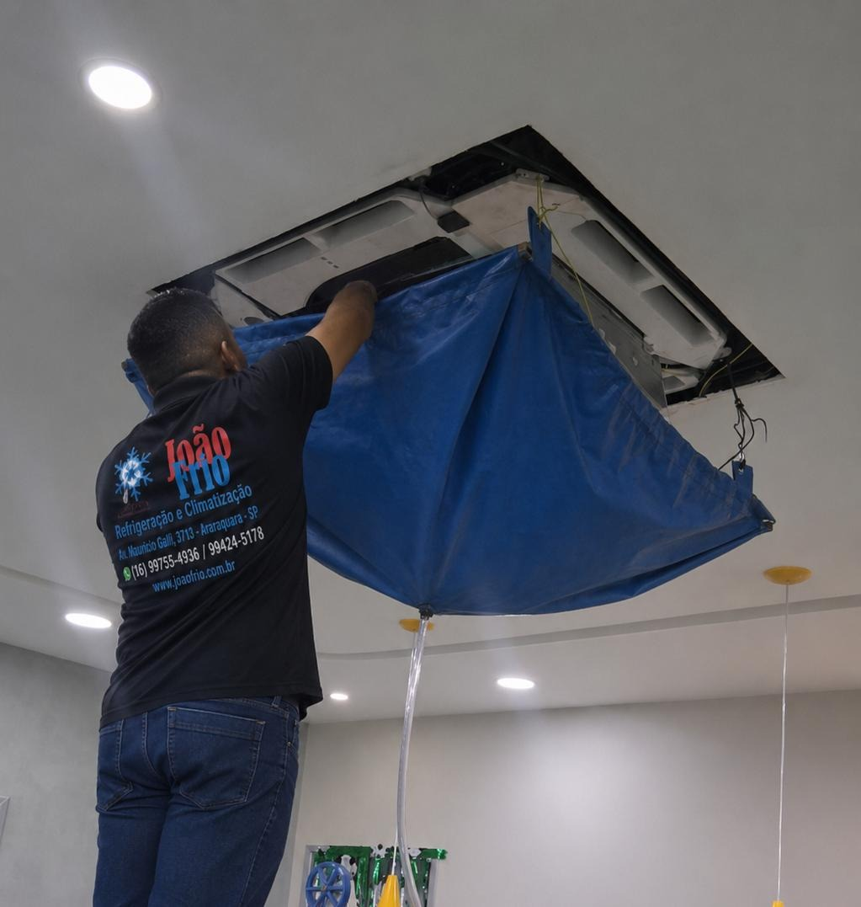
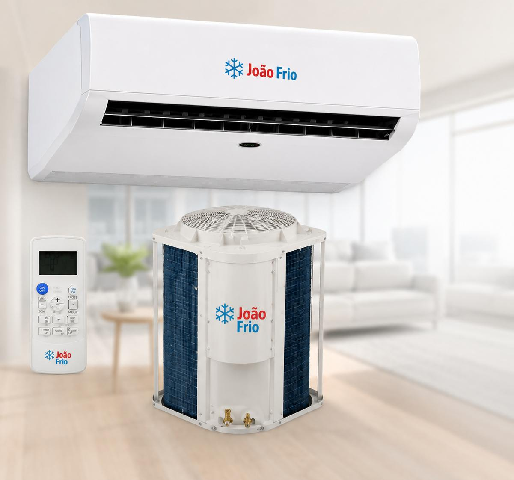
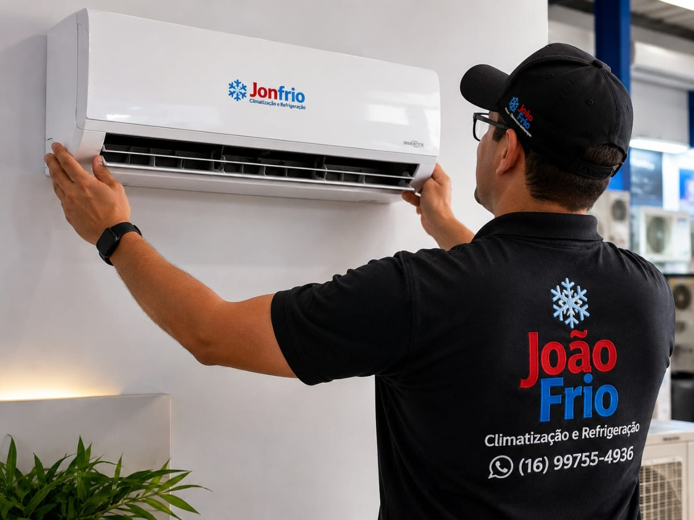
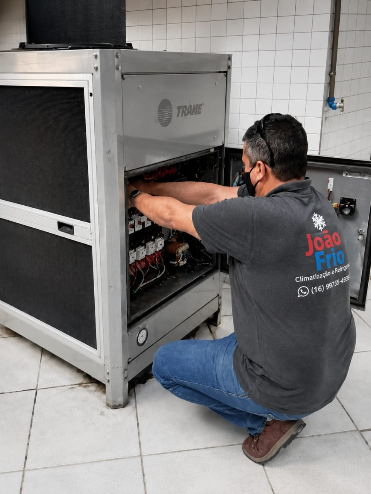
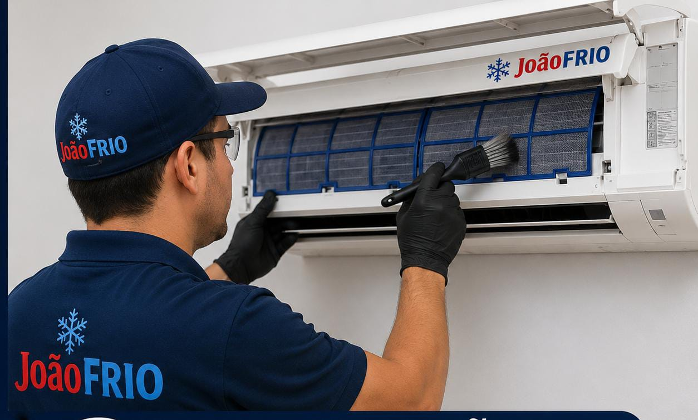
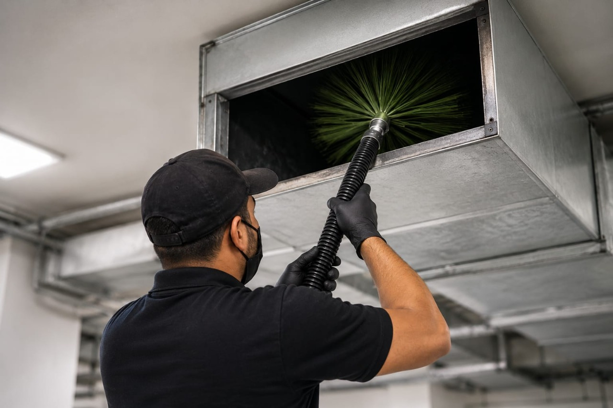

Venda de equipamentos
Equipamentos de qualidade, marcas confiáveis e orientação técnica para escolher a melhor solução.
Desde 2017 em Araraquara
Soluções completas em climatização e refrigeração para residências, empresas, comércios e indústrias.

PMOC
O PMOC é um plano obrigatório para sistemas de ar-condicionado em diversos ambientes de uso coletivo, conforme a Lei Federal nº 13.589/2018. Seu objetivo é garantir a qualidade do ar, a saúde das pessoas e o bom funcionamento dos equipamentos.
A JoãoFrio Climatização e Refrigeração é especializada na elaboração e execução de PMOC, oferecendo manutenção preventiva, limpeza técnica, higienização, emissão de relatórios e acompanhamento completo para manter sua empresa em conformidade com a legislação.
Com um PMOC bem executado, sua empresa reduz custos com manutenção, aumenta a vida útil dos equipamentos, melhora a qualidade do ar e atende às exigências da Vigilância Sanitária.
Conte com a JoãoFrio para manter seu sistema de climatização seguro, eficiente e dentro da lei.
Quem Somos
A JoãoFrio Ltda, Climatização e Refrigeração é especialista em soluções para os segmentos residencial, comercial e industrial, oferecendo serviços com qualidade, segurança e alto padrão técnico.
Nossa equipe é preparada para atender desde pequenos projetos até sistemas de climatização de grandes empresas, sempre utilizando as melhores práticas do mercado e priorizando eficiência, economia e confiabilidade.
Atendemos Araraquara e toda a região, levando experiência, compromisso e atendimento personalizado em cada serviço realizado.
JoãoFrio – Especialistas em Climatização e Refrigeração.
Laudos Técnicos
A JoãoFrio Climatização e Refrigeração realiza a emissão de laudos técnicos para sistemas de climatização, atendendo às necessidades de empresas, indústrias e estabelecimentos comerciais.
Nossos laudos avaliam as condições dos equipamentos, identificam possíveis irregularidades e fornecem informações técnicas para manutenção, adequação às normas e atendimento às exigências de órgãos fiscalizadores.
Conte com uma equipe especializada para emitir laudos técnicos com segurança, responsabilidade e qualidade.
Nossos Serviços
Equipamentos de qualidade, marcas confiáveis e orientação técnica para escolher a melhor solução.
Instalação residencial, comercial e industrial com segurança, precisão e acabamento profissional.
Diagnóstico técnico, correções e revisões para manter o sistema funcionando com eficiência.
Limpeza técnica para melhorar a qualidade do ar, reduzir impurezas e preservar o desempenho.
Emissão de laudos para avaliação, adequação, manutenção e atendimento a exigências técnicas.
Remoção de poeira e contaminantes para ambientes mais saudáveis e sistemas mais eficientes.

Venda de equipamentos
Trabalhamos com as melhores marcas e tecnologia para garantir conforto, eficiência e economia para o seu ambiente.
Oferecemos equipamentos de qualidade, atendimento especializado e soluções completas.

Instalação de Ar-Condicionado
Uma instalação feita corretamente é essencial para garantir o desempenho, a economia de energia e a durabilidade do equipamento.
Na JoãoFrio Climatização e Refrigeração, realizamos instalações de ar-condicionado residencial, comercial e industrial, seguindo as normas técnicas e utilizando materiais de alta qualidade. Nossa equipe é especializada e executa cada serviço com segurança, precisão e excelente acabamento.
Instalação profissional para garantir mais conforto, eficiência e tranquilidade para você.

Manutenção Preventiva e Corretiva
A manutenção preventiva e corretiva é essencial para garantir o bom funcionamento do sistema de climatização, reduzir o consumo de energia e aumentar a vida útil dos equipamentos.
A JoãoFrio Climatização e Refrigeração realiza manutenção em sistemas residenciais, comerciais e industriais, com atendimento técnico especializado, diagnóstico preciso e soluções eficientes para manter seu ar-condicionado sempre funcionando com segurança e desempenho.

Higienização de Ar-Condicionado
A higienização do ar-condicionado é fundamental para manter a qualidade do ar, eliminar fungos, bactérias, ácaros e outras impurezas, além de melhorar o desempenho e a eficiência do equipamento.
Na JoãoFrio Climatização e Refrigeração, realizamos uma limpeza técnica completa em sistemas residenciais, comerciais e industriais, utilizando produtos e procedimentos adequados para garantir um ambiente mais saudável e seguro.

Limpeza e Higienização de Dutos
A limpeza profissional dos dutos elimina poeira, fungos, bactérias e outros contaminantes, melhorando a qualidade do ar, reduzindo riscos à saúde e aumentando o desempenho dos equipamentos.
Clientes
Área de atendimento
Atendimento em Araraquara, Américo Brasiliense, Matão, Rincão, Santa Lúcia, Boa Esperança do Sul, Gavião Peixoto, Ibaté, São Carlos, Motuca, Trabiju, Nova Europa, Dobrada, Taquaritinga e cidades da região.
Confirmar atendimentoLocalização
Atendimento presencial de segunda a sexta, das 08h às 18h.
Abrir rotaDúvidas comuns
A frequência depende do uso e do ambiente. Em locais comerciais ou com uso intenso, a limpeza deve ser mais recorrente para preservar a qualidade do ar e o desempenho.
Sim. A JoãoFrio atende instalações residenciais, comerciais e industriais, incluindo split, cassete e soluções conforme o ambiente.
Sim. A equipe realiza revisão, limpeza, diagnóstico, troca de peças, correções e recuperação de desempenho.
Sim. Envie fotos do local ou do equipamento, informe a cidade e descreva o serviço desejado para agilizar o atendimento.

Orçamento rápido